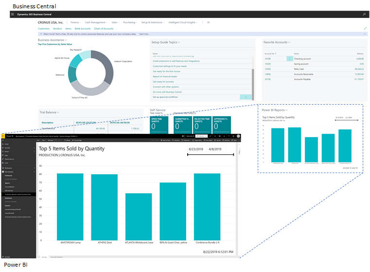

Einführung in Business Central und Power BI
[!INCLUDE[azure-ad-to-microsoft-entra-id](~/../shared-content/shared/azure-ad-to-microsoft-entra-id.md)]Einblicke in Ihre Business Central-Daten sind mit Power BI, einem Datenvisualisierungssystem von Microsoft, kein Problem. Power BI ruft Business Central-Daten ab, damit Sie mit diesen Daten Dashboards und Berichte erstellen können. Power BI stellt eine flexible Alternative zu den in Business Central integrierten Berichten dar, mit der Sie einen Drilldown durchführen und die Visualisierung anpassen können. Sie können in Business Central sogar die Daten verschiedener Unternehmen zusammenführen. Manche Power BI-Berichte können auch in Business Central eingebettet und angezeigt werden, ohne das System zu verlassen. Komplexere Dashboards bieten auf der Power BI-Webseite eine bessere Erfahrung.

Funktionen von Power BI und Business Central
Bei der Arbeit mit Business Central und Power BI stehen Ihnen verschiedene Funktionen zur Verfügung. Manche Dinge werden über Power BI ausgeführt, andere über Business Central. Außerdem sind einige Funktionen nur mit Business Central online verfügbar und nicht mit on-premises. Die folgende Tabelle verschafft Ihnen einen Überblick.
| Funktion | Description | Online | Lokal | Weitere Informationen |
|---|---|---|---|---|
| Zeigen Sie Business Central-Daten in Power BI an. | Sie können Ihre Daten aus Business Central in Berichten in Power BI anzeigen. Business Central online umfasst einige vordefinierte Power BI-Berichte. Oder möglicherweise hat Ihre Organisation einige benutzerdefinierte Berichte. |  |
|
Hier... |
| Zeigen Sie Power BI-Berichte im Business Central-Client an. | Power BI-Berichte, die Business Central-Daten anzeigen, können direkt in Teile von Business Central-Seiten eingebettet werden. Sie können in diesem Teil jeden beliebigen Bericht anzeigen, der Ihnen zur Verfügung steht. | |
* |
Hier.... |
| Erstellen Sie Berichte und Dashboards in Power BI, die Business Central-Daten anzeigen. | Verwenden Sie Power BI Desktop, um eigene Berichte und Dashboards zu erstellen. Sie können die Berichte in Ihrem eigenen Power BI-Dienst veröffentlichen oder sie mit anderen Personen innerhalb ihrer Organisation teilen. | |
|
Hier... |
| Business Central-Apps in Power BI | Business Central veröffentlicht drei Apps für Power BI auf Microsoft AppSource. Diese Apps erstellen detaillierte Berichte und Dashboards in Ihrem Power BI-Dienst zum Anzeigen von Business Central-Daten. Zu den verfügbaren Apps gehören:
|
|
Hier... | |
| Arbeiten mit Business Central Daten in Datamarts und Dataflows | Ab Juli 2022 können Sie den Connector Business Central in Power Query Online zu Datenflows verwenden, die Sie über verschiedene Berichte und Dashboards hinweg teilen. | |
Hier... |
* Für diese Funktion ist eine registrierte Anwendung für Business Central in Microsoft Azure erforderlich. Weitere Informationen finden Sie unter Registrieren von Business Central lokal in Microsoft Entra-ID zur Integration mit anderen Diensten.
Vorbereitung auf die Verwendung von Power BI
Es gibt einige Aufgaben, die vor der Verwendung von Power BI mit Business Central erledigt werden müssen. Die Aufgaben hängen von Ihrer Rolle in Ihrer Organisation und davon ab, was Sie mit Power BI machen wollen:
- Als Business-Benutzer möchten Sie Power BI-Berichte anzeigen, entweder im Power BI-Dienst oder in Business Central
- Als Administrator sind Sie für die Verwaltung der organisationsweiten Einstellungen verantwortlich, die festlegen, wie Business Central und Power BI arbeiten.
- Als Berichtersteller möchten Sie angepasste Power BI-Berichte erstellen, die Sie mit anderen Benutzern teilen können.
| Aufgabe | Geschäftsbenutzer | Administrator | Berichtsersteller | Weitere Informationen |
|---|---|---|---|---|
| Erstellen Sie ein Power BI-Konto. | |
|
|
Gehen Sie zu https://powerbi.microsoft.com. Verwenden Sie bei der Registrierung für ein Konto Ihre geschäftliche E-Mail-Adresse und Ihr zugehöriges Kennwort. Für die Anmeldung benötigen Sie eine Lizenz, aber in den meisten Fällen sollten Sie bereits eine kostenlose Lizenz besitzen. Weitere Informationen finden Sie unter Power BI Lizenzierung. |
| GET Power BI Desktop | |
Zum Herunterladen gehen Sie zu Power BI Desktop. Weitere Informationen finden Sie unter Power BI Desktop beziehen. | ||
| Stellen Sie Business Central-Daten auf Power BI | |
|
Daten über API-Seiten oder OData-Webdienste exponieren | |
| Aktivieren Sie die Power BI-Integration (nur vor Ort) |
|
Business Central lokal für die Power BI-Integration festlegen |
Nächste Schritte
- Wenn Sie ein Administrierender sind, der Power BI in Business Central einrichten muss, gehen Sie zu Power BI Integration aktivieren.
- Wenn Power BI bereits eingerichtet ist und Sie die Features ausprobieren möchten, gehen Sie zu Mit Power BI Berichten in Business Central arbeiten.
Siehe auch
Analysen – Übersicht
KPIs mit Power BI-Metriken verfolgen
Business Central als Power BI-Datenquelle verwenden
Business Central als Power Apps-Datenquelle verwenden
Business Central in Power Automate verwenden
Power BI Dokumentation
Was ist Power BI?
Schnellstart: Stellen Sie eine Verbindung zu Daten her in Power BI Desktop
Einführung in Datamarts
Einführung in Datenflows und Self-Service-Datenvorbereitung
Kostenlose E-Learning-Module für Business Central finden Sie hier